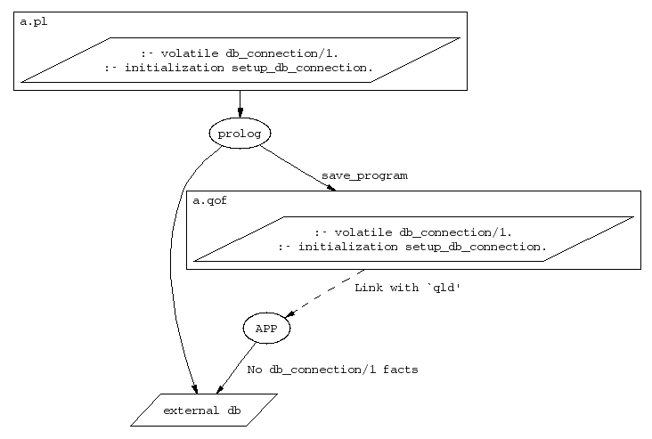

A predicate should be declared as volatile if it refers to data that cannot or should not be saved in a QOF file. In most cases a volatile predicate will be dynamic, and it will be used to keep facts about streams or references to C-structures. When a state or a module is saved at run-time, the clauses of all volatile predicates defined in the context will be left unsaved. The predicate definitions will be saved though, which means that the predicates will keep all properties, that is volatile and maybe dynamic or multifile, when the saved state is restored.
For example, if a Prolog application connects to an external database
at start up, establishing a connection by an assertion like (A), a
volatile declaration would prevent each particular connection from
getting saved in the QOF file, as illustrated in the following figure.
A code example is found in the reference page for
initialization/1.
assert(db_connection(Connection)) (A)

When used as a compile-time directive, the volatile declaration of a predicate must appear before all clauses of that predicate. The predicate is reinitialized. When used as a callable goal, the only effect on the predicate is that it is set to be volatile.